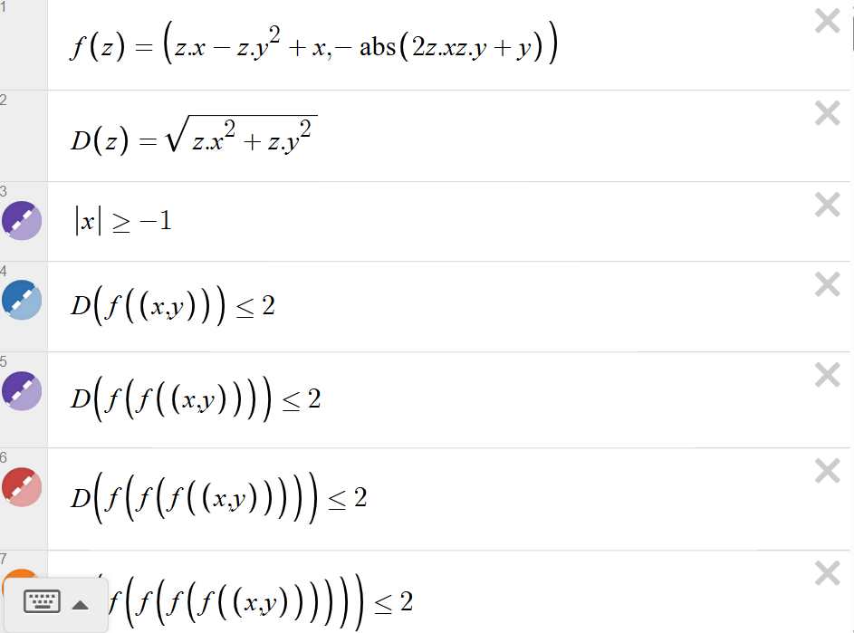
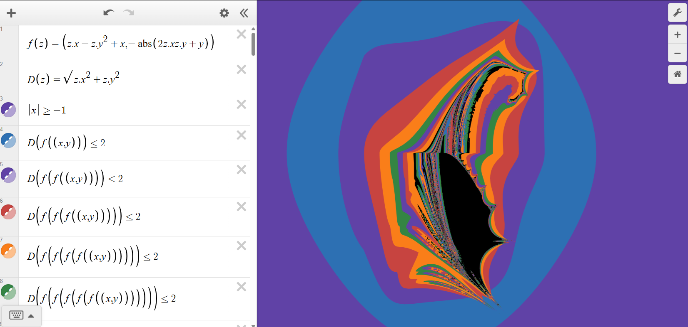
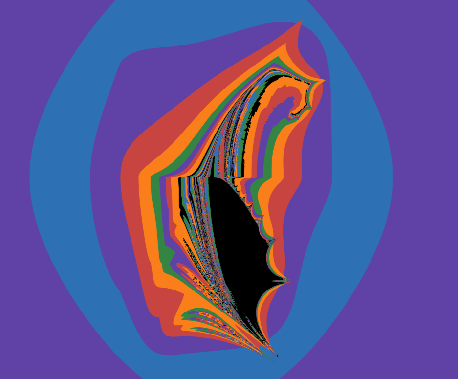
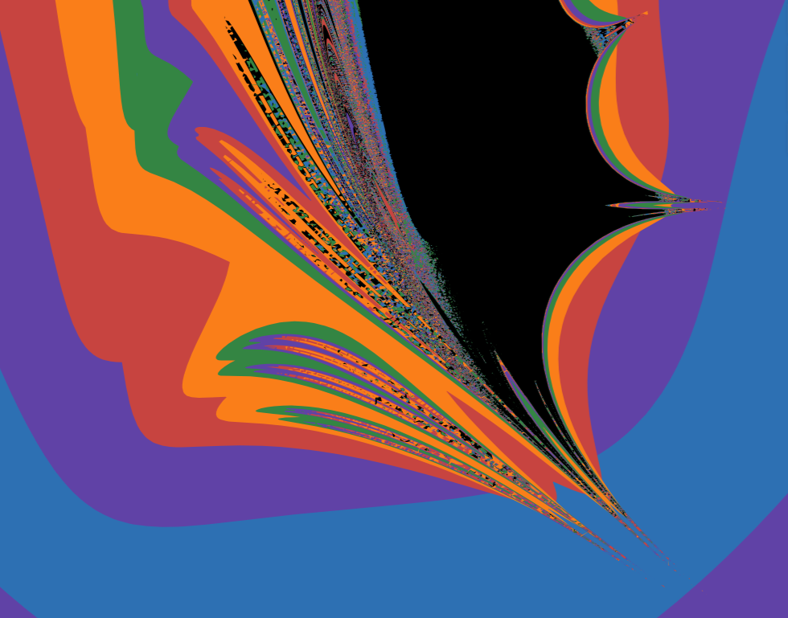
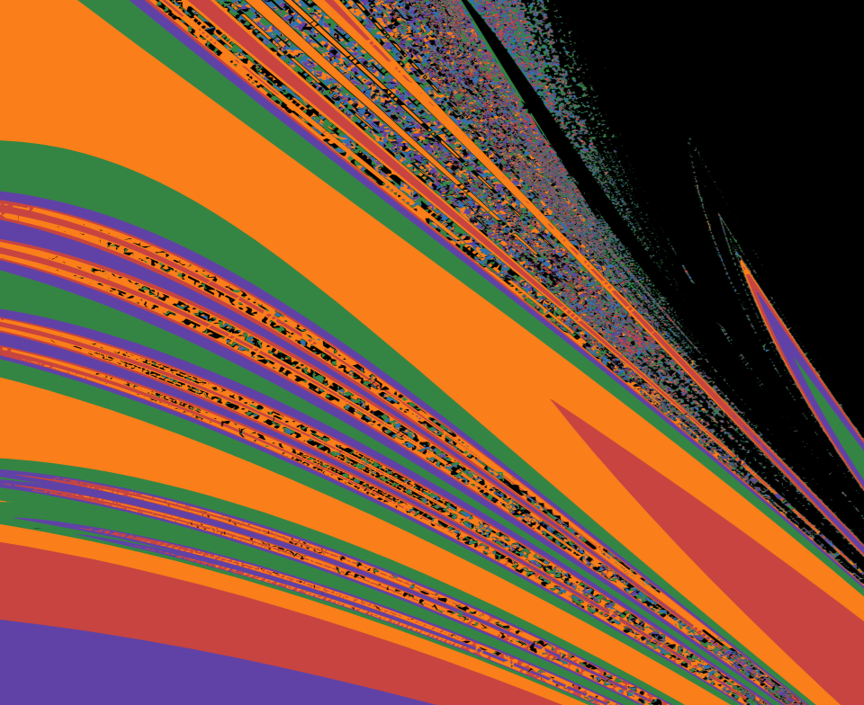
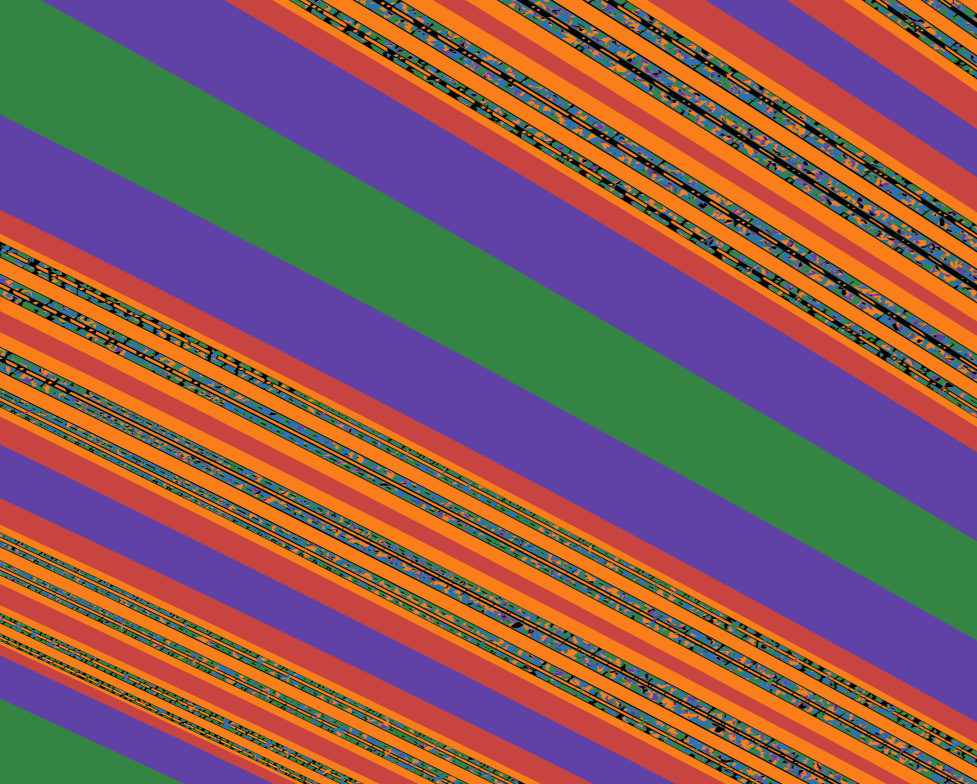
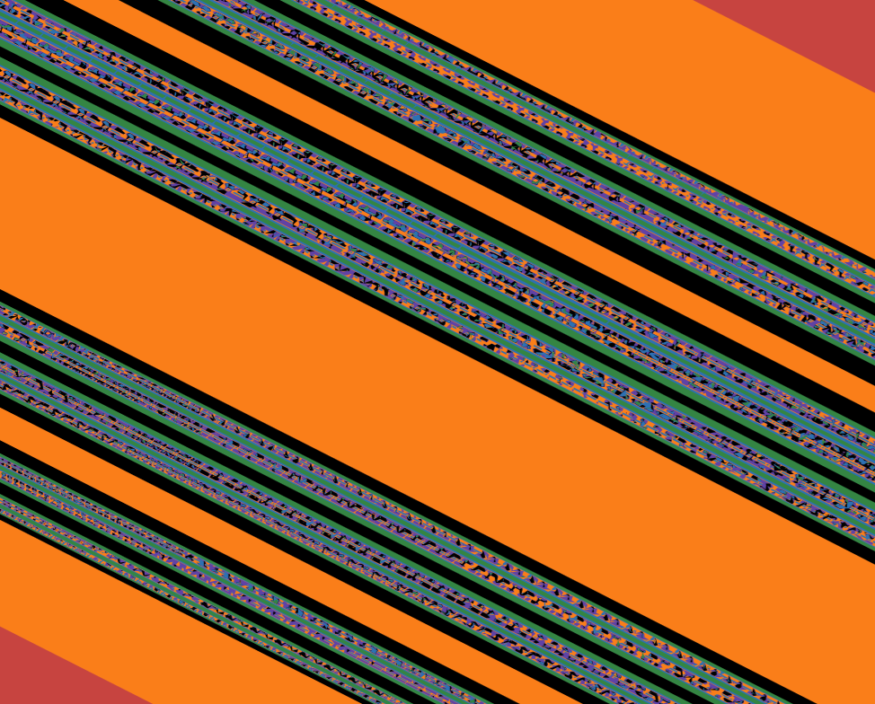

March 2, 2026
Dolphin Fractal — A Mandelbrot-Derived Transformation with Absolute-Value Folding
Overview:
Definition: We treat a point as a pair \(z=(z.x, z.y)\) and define the iteration as a 2D mapping
\(f(z)=(f_x(z), f_y(z))\).
In this page, the “first component” means the x-component \(f_x\), and the “second component” means the y-component \(f_y\).
This project generates a new fractal by transforming a Mandelbrot-style iteration in the real plane.
Reiji replaced the \(z.x^{2}\) term in the first component with a linear \(z.x\) term (keeping \(z.y^{2}\)),
and introduced an absolute-value fold in the second component.
The global silhouette resembles a dolphin swimming downward, while deep zooms reveal stripe-like structures
that persist across scales.
Note: All content on this page is originally explained by Reiji in Japanese. The English version is translated by AI and structured by a parent, with Reiji's final approval.
Reiji's Words and Ideas
-
I wanted to create a new fractal by transforming the formula used for the Mandelbrot set.
The standard Mandelbrot iteration can be written (in real components) as:
\( f(z)=\left(z.x^{2}-z.y^{2}+x,\; 2z.xz.y+y\right) \) \( D(z)=\sqrt{z.x^{2}+z.y^{2}} \) \( D\!\left(f^{(n)}(x,y)\right)\le 2 \)
-
This time, I changed the recurrence to:
\( f(z)=\left(z.x-z.y^{2}+x,\;-\mathrm{abs}\left(2z.xz.y+y\right)\right) \)
- I was curious what would happen if I changed only one side of the quadratic structure. In the original Mandelbrot formula, the first component includes \(z.x^{2}-z.y^{2}\), which comes from squaring a complex number. So I replaced \(z.x^{2}\) with \(z.x\), while keeping \(z.y^{2}\) as it is, to see how the overall shape would deform.
- I also wanted to test the effect of adding “minus absolute value.” The famous Burning Ship fractal uses absolute values, but in my version I apply it to the entire expression \(2z.xz.y+y\), not only to \(2z.xz.y\).
- In a previous project (Mandelbrot/Julia parameter explorer), I worked with complex-number controls. This time I focused on directly deforming the shape, so I drew it as a real-plane mapping in Desmos.
- The result looked like a dolphin swimming downward, so I named it the Dolphin Fractal. When I zoom in, stripe-like patterns continue to appear far beyond what I initially expected.
- At first I predicted the dolphin shape would repeat in a self-similar way, but instead I found long, layered stripes. That difference from my prediction is what made it especially interesting.

Desmos Implementation of the Transformed Recurrence
The Desmos expression list defining the mapping \(f(z)\), the distance function \(D(z)\), and the escape condition \(D(f^{(n)}(x,y))\le 2\).

Dolphin Fractal: Global View
The overall silhouette resembles a dolphin swimming downward. Large diagonal bands appear, and the boundary contains intricate textures.

Zoom: Stripe-Like Structure Inside Broad Bands
Even inside a large uniform region, thin layered stripes appear and repeat as the view is magnified.

Deep Zoom: Parallel Bands and Micro-Textures
The boundary develops multiple stacked layers. The diagonal banding persists while fine details accumulate.

Boundary Behavior: Fan-Like Spreading of Stripes
Near certain boundary regions, stripes flare outward in a fan-like structure. This suggests repeated folding and re-layering of escape-time boundaries.

Curved Layers and a Dark Basin-Like Region
A large dark region appears like a basin or cavity, wrapped by multiple colored layers. Thin stripes remain embedded inside the broader bands.

Dolphin Fractal: Framing the Full Silhouette
A clearer framing of the “dolphin” outline and its layered boundary structure. The absolute-value fold contributes to sharp edges and banded regions.
| Output Link | Dolphin Fractal — Desmos Graph |
|---|---|
| Application Used |
Desmos Graphing Calculator |
AI Assistant’s Notes and Inferences
This work explores what happens when a Mandelbrot-style iteration is modified by (1) replacing the \(z.x^{2}\) term in the first component with a linear \(z.x\) term (while keeping \(z.y^{2}\)), and (2) introducing an absolute-value fold \(-\mathrm{abs}(2z.xz.y+y)\) in the second component. These operations tend to create sharp folds, layered bands, and stripe-like boundaries.
- Because the mapping includes an absolute value, it is not “complex-analytic” in the usual sense. Such non-smooth folding often produces strong banding and angular boundary features (as in Burning Ship–type families).
- The “downward flow” of the overall silhouette may be reinforced by the second component always being pushed negative by \(-|\,\cdot\,|\), which biases the dynamics toward one side of the plane.
- The stripe patterns can be interpreted as layered escape-time boundaries: regions that differ by when (or how) the orbit crosses the escape threshold stack into bands under repeated folding.
- Reiji’s prediction—“maybe the dolphin shape will repeat self-similarly”—is a natural hypothesis, but in folded (non-analytic) systems, the dominant repeating feature is often the band/stripe geometry rather than a repeated copy of a recognizable global silhouette.
In summary, this project shows a clear experimental approach: isolate a meaningful structural change to a well-known system (Mandelbrot dynamics), implement it in Desmos, and then test hypotheses by deep zoom observation.